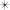

NEORIS

TT Neoris — шрифт, разработанный командой TypeType в 2023 году. Его название образовано от двух слов: “neo” — «новый» и “ris” --- «возвышение». Работа над ним длилась два с половиной года.
Это самый амбициозный проект студии: цель — создать «идеальный неогротеск», который откроет новую главу в типографике и станет бестселлером.
Его характер нейтральный, но с деталями, которые делают его уникальным.

Hairline
Thin
ExtraLight
Light
Regular
Medium
Demibold
Bold
Extrabold
Black
Hairline
Thin
ExtraLight
Light
Regular
Medium
Demibold
Bold
Extrabold
Black
21
Начертание
10
Прямых
1
Переменный
10
Курсивных
V
A
R
I
A
B
L
E
Поддержка более 230
русский
Большое внимание в Neoris уделено стилистическим альтернативам.
Такой подход позволяет пользователю буквально собирать собственный характер шрифта и формировать уникальный визуальный язык внутри одного семейства.
Upright cursive
Upright cursive
Upright cursive
Upright cursive
В набор входит большое количество различных знаков. Это избавляет дизайнеров от необходимости создавать дополнительные иконки вручную — всё уже встроено в гарнитуру и гармонично сочетается с её формами.